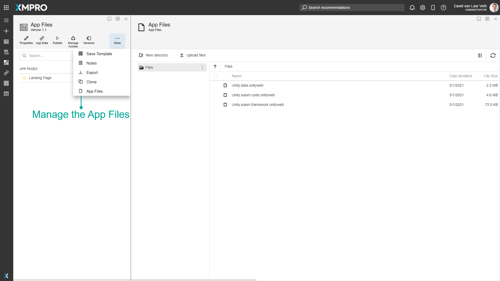

App Files
App Files are a way to import files into an Application. App Files are managed through the App Files command or through the + button next to related properties in the Block Properties of a Page. Some Blocks allow the selection of App Files for some Block Properties.
The App Files explorer allows you to use, rename, delete, and perform more actions on an uploaded file. App Files are useful in many scenarios, for example, if you need specific files to integrate Unity or D3 Visualizations onto the page.

List of Blocks that use App Files
Unity
Files that can be uploaded for Unity include the Unity web assembly code file, Unity data file, and Unity framework file for a Unity project. See the Unity article to view the files you will need to integrate a Unity project.
D3 Visualization
Files that can be uploaded for D3 Visualizations include an HTML script that is used to create data visualization which will allow you to display data from a data source in real-time. See the D3 Visualizations article for more information about how to write and upload a script.
Actions on the App Files
| Action | Description |
|---|---|
| New directory | Creates a new directory under the specified directory or at the root Files directory. |
| Upload files | Uploads files into the specified directory or at the root Files directory. |
| Change View | Allows the view to be changed from Thumbnails to Details. |
| Refresh | Refreshes the App Files. If any changes have been made it also opens the Progress popup, which displays the recent history. |
| Download | Downloads the selected App File(s). |
| Move to | Moves the selected App File(s) to a different directory. |
| Copy to | Copies the selected App File(s) to a different directory. |
| Rename | Renames the selected App File. |
| Delete | Deletes the selected App File(s). |
| Clear Selection | Clears the selected App Files(s). |
Further Reading
Last modified: May 24, 2025